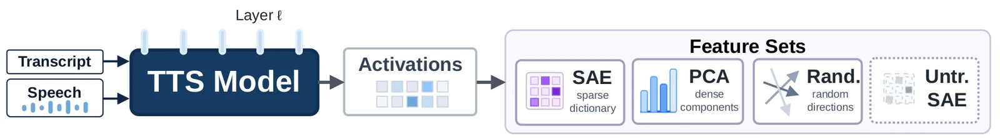
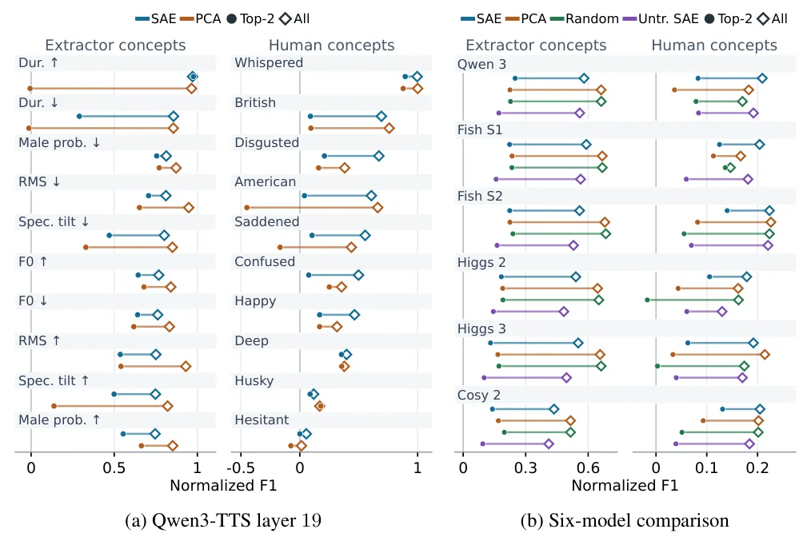
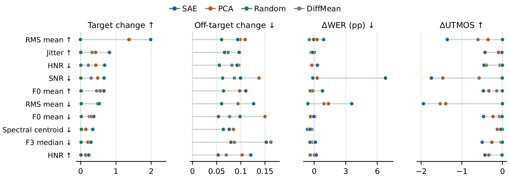
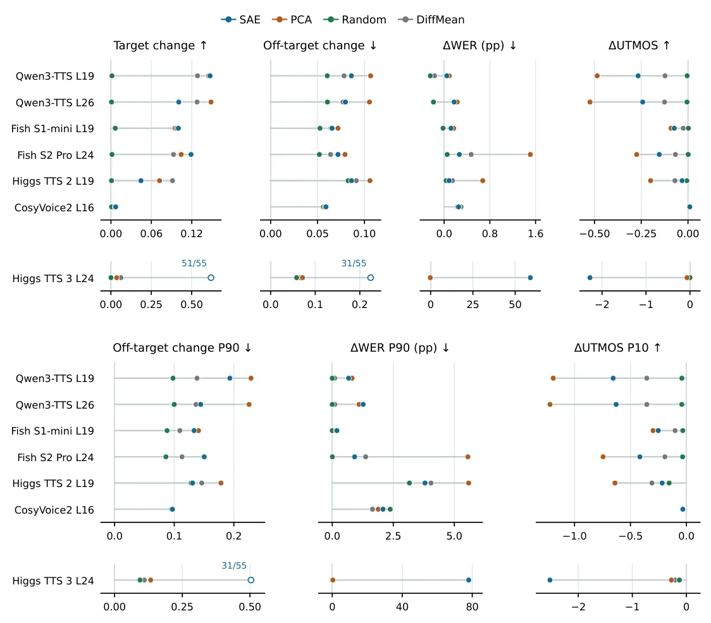

O Problema da Caixa Preta em Voice-Cloning
Modelos de Text-to-Speech (TTS) de zero-shot, capazes de clonar a voz de um falante desconhecido a partir de poucos segundos de áudio, tornaram-se onipresentes. No entanto, a comunidade científica ainda debate quais propriedades acústicas esses modelos realmente aprendem e representam internamente. A fala humana é uma entrelaçamento complexo de identidade do falante, textura vocal, emoção e ritmo. Entender como os modelos decompõem esses sinais é crucial para controle e segurança.
Estudos anteriores focaram em modelos não-clonadores ou usavam métodos qualitativos baseados em linguagem natural. Este trabalho, de pesquisadores da University of Texas at Austin e New York University, introduz um framework quantitativo para testar a interpretabilidade em modelos autoregressivos de voice-cloning. O objetivo não é apenas listar o que o modelo sabe, mas verificar se é possível prever e direcionar (steer) essas propriedades durante a geração de áudio.
A pesquisa compara três abordagens principais para extrair features das ativações internas do modelo: Autoencoders Esparsos (SAEs), Análise de Componentes Principais (PCA) e direções aleatórias. O estudo se concentra no modelo Qwen3-TTS, mas estende a validação para cinco modelos adicionais (Fish, Higgs e CosyVoice2) para testar a generalização entre diferentes arquiteturas. A hipótese central é que métodos esparsos podem revelar conceitos mais finos e interpretáveis do que métodos densos tradicionais.

O Framework de Interpretabilidade
O cerne do trabalho é a extração de features das ativações residuais (residual-stream activations) do modelo TTS. Em vez de olhar para os logits finais, os autores analisam as representações intermediárias. Eles aplicam SAEs treinados para decompor essas ativações em um dicionário de features esparsas. A esparsidade é importante porque assume que, em qualquer momento, apenas um subconjunto pequeno de conceitos acústicos está ativo. Em contraste, a PCA projeta as ativações em componentes ortogonais densos, capturando a maior variância possível sem a restrição de esparsidade.
Além dos métodos estruturados, os autores usam direções aleatórias como baseline. Isso serve para verificar se os resultados observados não são apenas artefatos da dimensionalidade alta ou ruído estatístico. O processo envolve converter as ativações em nível de camada em features de nível de utterance (frase completa). Para o Qwen3-TTS, eles analisam múltiplas camadas, enquanto para os outros cinco modelos, focam em uma camada específica para manter a comparabilidade.
O framework avalia essas features através de três lentes: sparse probing, steering durante a geração e auto-interpretabilidade quantitativa. O sparse probing testa se um conceito conhecido (como 'pitch' ou 'energia') pode ser previsto com alta precisão usando apenas um pequeno número de features (top-k). O steering injeta vetores direcionais nessas features durante a síntese para ver se o áudio de saída muda conforme o esperado. A auto-interpretabilidade usa um LLM de áudio para rotular automaticamente features com alta ativação, validando se o modelo aprendeu conceitos além dos rótulos humanos pré-definidos.
Probing: Recuperando Conceitos Conhecidos
Para avaliar a capacidade de recuperação, os autores coletam exemplos positivos e negativos para 55 conceitos extraídos de extractores automáticos e 21 conceitos rotulados por humanos (como 'happy', 'whispered', 'Scottish accent'). Eles classificam as features de SAE e PCA pela diferença média entre ativações positivas e negativas, selecionando as top-k. Em seguida, treinam probes logísticos nessas features para prever o valor do conceito.
Os resultados mostram que muitos conceitos acústicos e paralinguísticos são recuperáveis. No entanto, a esparsidade impõe um limite: poucos conceitos são fortemente preditos por apenas duas features (top-2). Isso sugere que a representação de conceitos como 'emoção' ou 'sotaque' pode estar distribuída por muitas features esparsas, ou que a relação entre a feature e o conceito não é linear o suficiente para ser capturada por um probe simples com poucos elementos.
Ao comparar SAEs e PCA, os autores encontram uma distinção clara de utilidade. Para a previsão esparsa de conceitos humanos, os SAEs superam a PCA em média. Isso indica que a decomposição esparsa é mais alinhada com a forma como humanos categorizam atributos vocais discretos. Por outro lado, a PCA se mantém como uma baseline forte para probing denso, capturando variância significativa sem a necessidade de seleção manual de features.

Steering: Controlando a Geração
A prova de fogo para a interpretabilidade é o steering: a capacidade de alterar a saída do modelo manipulando suas representações internas. Os autores injetam vetores de steering construídos a partir das top-2 features de cada conceito durante a geração do áudio. Eles avaliam três métricas: mudança no conceito alvo (target change), mudança em conceitos não-alvo (off-target change) e degradação da qualidade (medida por WER e UTMOS).
O steering é eficaz para alterar propriedades como pitch, energia, ruído e características espectrais. No entanto, o efeito varia drasticamente entre modelos e conceitos. Um ponto crítico encontrado é que forte capacidade de probing (previsão) não garante forte capacidade de steering. Um conceito pode ser facilmente identificado pelas features do modelo, mas manipular essas features pode não produzir a mudança acústica desejada de forma limpa.
Além disso, o steering frequentemente causa mudanças off-target. Ao tentar aumentar a 'energia', o modelo pode inadvertidamente alterar o 'pitch' ou a clareza da fala. Isso reflete a natureza entrelaçada das representações em modelos autoregressivos. A qualidade do áudio também é afetada; a alteração intencional de propriedades como SNR (Relação Sinal-Ruído) ou RMS (valor eficaz) pode ser interpretada pelo metricador de qualidade como degradação, mesmo que a intenção seja estilística.

Auto-Interpretabilidade e Descoberta de Novos Conceitos
Além de validar conceitos conhecidos, o framework foi projetado para descobrir conceitos que os humanos não rotularam. Os autores usam um LLM de áudio (Gemini) para analisar utterances com alta e baixa ativação em cada feature de SAE. O LLM propõe rótulos em linguagem natural para essas features. A validade é testada por coerência (o rótulo descreve o outlier?), precisão (o rótulo prediz clips não vistos?) e estabilidade (o rótulo permanece consistente sob relabeling?).
Essa abordagem revelou 684 features automaticamente validadas no Qwen3-TTS. Muitas dessas features correspondem a conceitos além do básico, como clusters de falantes, estilos de fala específicos e condições de gravação (ex: ruído de fundo, reverberação). Isso demonstra que os SAEs capturam nuances finas que extractores padrão e rótulos humanos não cobrem.
A auto-interpretabilidade mostra que os SAEs são superiores à PCA e a direções aleatórias para essa tarefa de descoberta. A esparsidade ajuda a isolar conceitos específicos, enquanto a PCA tende a misturar variâncias, dificultando a atribuição de um rótulo único e coerente. Os autores argumentam que essa capacidade de descoberta é vital para entender o que modelos de grande escala realmente aprenderam, além do que foi explicitamente treinado.

Generalização e Limitações
Para testar a robustez, os autores estenderam o probing e o steering para cinco modelos adicionais. Os resultados mostram que, embora os conceitos fundamentais (pitch, energia) sejam generalizáveis, a eficácia do steering varia. Alguns modelos respondem melhor a SAEs, outros a PCA. Isso sugere que a estrutura interna de representação não é universal entre arquiteturas autoregressivas de TTS.
O paper reconhece limitações importantes. O estudo foca em fala em inglês; a extensão para speech multilingue é deixada como trabalho futuro. Além disso, a análise é estática (nível de utterance); como as features variam temporalmente dentro de uma frase não é explorada. A composição de controles (steerar múltiplas features simultaneamente) também não é investigada, o que é um passo necessário para aplicações práticas de controle fino.
Outra limitação é a dependência do LLM de áudio para a auto-interpretabilidade. Se o LLM falhar em identificar nuances acústicas complexas, as features descobertas podem ser subestimadas ou mal rotuladas. No entanto, a validação quantitativa (precisão de previsão em held-out clips) mitiga parcialmente esse risco, oferecendo uma métrica objetiva para a qualidade do rótulo.
Conclusão e Implicações
Este trabalho estabelece um benchmark rigoroso para a interpretabilidade de modelos TTS de voice-cloning. Ao combinar probing, steering e descoberta automática, os autores mostram que esses modelos codificam uma riqueza de propriedades acústicas, mas que a extração e manipulação dessas propriedades são não-triviais. SAEs se destacam na descoberta de conceitos novos e na previsão esparsa, enquanto PCA oferece uma baseline densa robusta.
Para desenvolvedores e pesquisadores, a mensagem é clara: a interpretabilidade não é apenas sobre entender, mas sobre controlar. A desconexão entre probing e steering indica que entender o que o modelo sabe não garante que possamos manipulá-lo com precisão. Futuros trabalhos devem focar em como desentrelaçar essas representações para permitir um controle mais granular e seguro de sistemas de síntese de voz, especialmente em contextos de uso ético e prevenção de deepfakes.
O que fica
- Modelos TTS codificam pitch, energia e sotaque, mas poucos conceitos são previsíveis com poucas features.
- SAEs são superiores para descoberta de conceitos novos, enquanto PCA é robusta para baselines densas.
- Steering altera propriedades acústicas, mas pode degradar qualidade ou afetar conceitos não-alvo.
- Foram validados 684 features automáticas cobrindo estilo e condições de gravação além de rótulos humanos.
Paper original: Discovering Interpretable Acoustic Features in Autoregressive Voice-Cloning TTS Models
Comentários
Nenhum comentário ainda. Seja o primeiro.